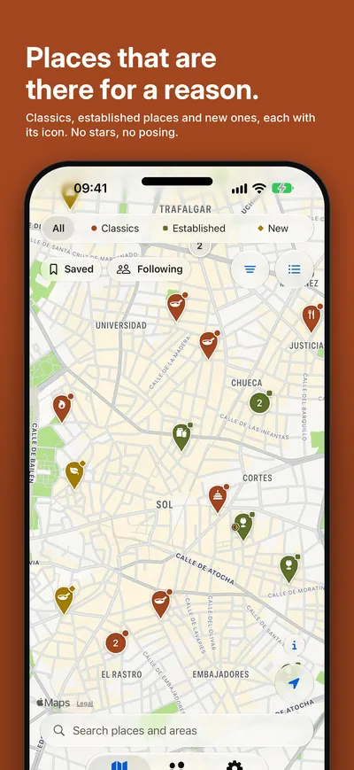
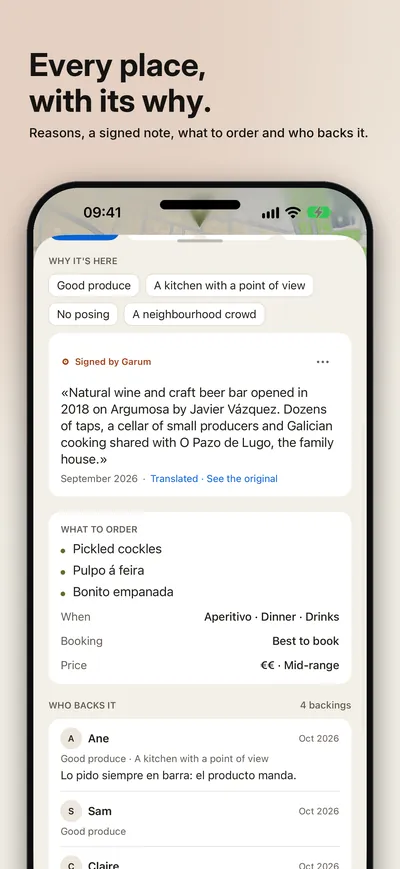
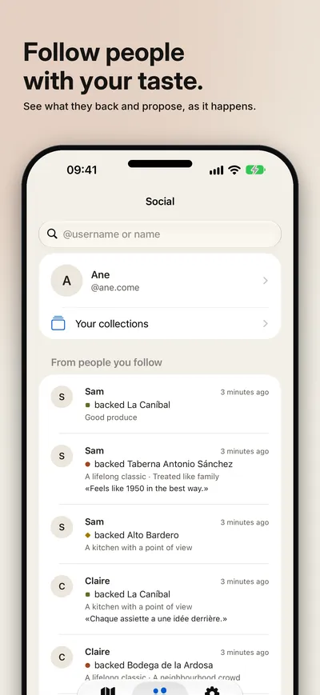
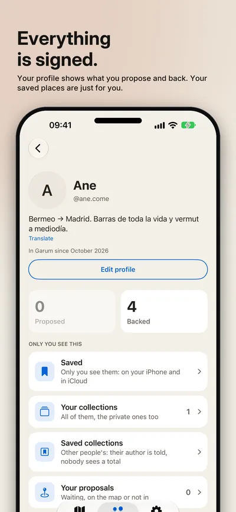
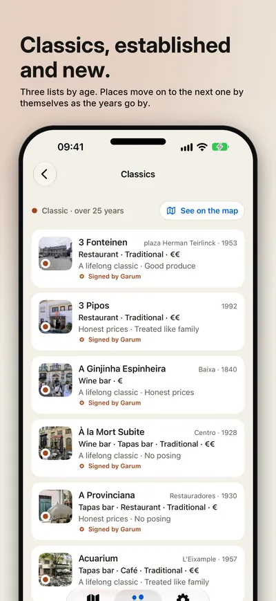
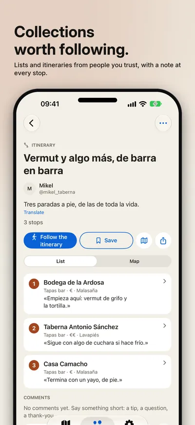
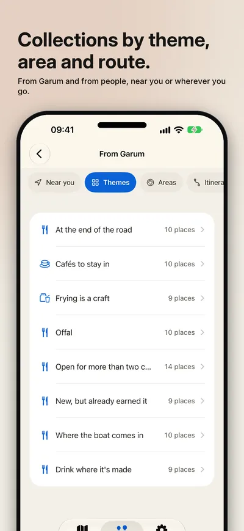
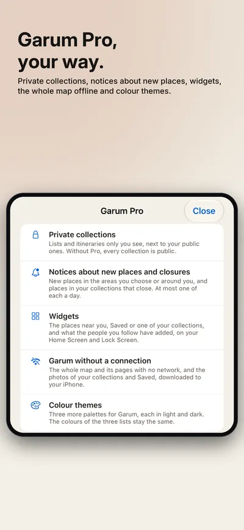

Seize Apps · iOS
Garum
Garum is a map where places get in on merit, not on stars or ads. Three lists by age — classics open for more than 25 years, established places between 3 and 25, and new ones under 3 with a point of view — and places move from one to the next on their own as the years go by. Each one carries the reasons it is there and notes signed by whoever stands behind it. Anyone can propose a place; it gets in when a Curator signs it or enough trusted people back it.








What it does
One job, done well.
- 01 / WHY
Every place, with its why
A closed list of reasons — a classic, the product, the price, the room — and signed notes, never a score. Opening hours, phone and directions come live from Apple Maps.
- 02 / FIND
What you fancy, now
Filter by list, kind of place, food, price and moment, or by what fits right now. What to order and whether to book are on the card.
- 03 / SIGNED
Everything is signed
See who backs each place and follow people with your taste. Make collections — lists and itineraries with a note at every stop — and share them with a link, even with people who don't have Garum. Propose what is missing; if it does not get in, you are told why. Garum Pro adds private collections, notices about new places in the areas you choose and about places in your collections that close, widgets, the whole map offline and colour themes — a one-time purchase, with a free 30-day trial.
Privacy
Yours, not ours.
Browsing the map needs no account. To see why each place is there and to contribute, you sign in with Apple, without giving your email: you appear with the name you share with Apple (or one you set later) and a username, and what you contribute is published, on a server in the EU. Your location never leaves your iPhone, except for an approximate area if you turn on Garum Pro notices for «My location». No ads, no analytics. Garum has its own privacy policy and terms.
A Seize Apps app.